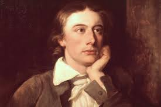

I would like to share my story with you. <3
Hi, I’m the "crazy" guy who believed in the nightingale, yes, that guy. The one who held on to something beautiful, even when it seemed liked the most foolish and impossible thing in the world. I’m also the same “crazy” guy who chose to believe in hope, even when it felt like hope had packed its bags and left for good. To anyone out there feeling like hope is out of reach or like the world has gone too dark, this is a message for you. I don’t believe hope is some distant, mythical thing but rather I believe it is real and very much there. It’s in the little things, the quiet moments, the unexpected kindness, the song of the nightingale even when no one else is listening. I just wanted to use this opportunity to share my personal truth that believing in something better, something brighter, does not make you naive. It makes you brave and if being hopeful is considered crazy, then I’m proud to be 'crazy'.
I was in a really dark place before I had my vision of the Nightingale. I had just lost my wife and our unborn child. My work started slipping, my focus was gone, and I felt like I was failing the little boy inside me, the one who once had big dreams and a clear vision of who he wanted to become. I started drinking more and more, until it became my only escape from the crushing weight of my thoughts. It got so bad that I seriously considered ending it all to escape this feeling. That same day, I went to my favorite tree, a place I used to go for peace and quiet. I poured my favorite drink and waited until I was drunk enough not to feel the poison I planned to take but just as I was about to pour that final drink, I heard a song, the most beautiful melody. Yet....there was nothing there. I looked around the tree, searched the sky, trying to find the source. Nothing. I sat down again, still hearing that mesmerizing song. As I glanced at the poison, something caught my eye—a bird. The most stunning bird I had ever seen. To this day, I can’t tell you if it was real, a dream, or something divine. But it was unlike anything I’d ever witnessed. It flew around me, singing this entrancing melody and song. The more I listened, something inside me shifted and it brought me a feeling of calmness. I felt peace I had not felt in years and when I closed my eyes to listen more deeply, the song began to speak to me not in words though, but in feeling. It brought dreams and goals to me that I thought I had lost. I saw that little boy version of myself again. I saw a brigher future, I saw hope. Just before I opened my eyes, I felt the bird come close and whisper in my ear “Do not give up.” I opened my eyes, and it was completely dark outside. No bird. No music. Just me, the same tree, the same place but this time I was no longer the same person. I felt something different, I felt hope. I don’t know if what I saw was real, a dream, or an angel sent in disguise to guide me. All I know is that without that moment, I wouldn’t be here writing this today. For those reading this I just want to say that if you are struggling, please hear me out, do not give up. If I could make it through my darkest hour, I believe with all my heart that you can do it too. Continue to Keep fighting because you are not alone and even if you feel you are, just remember the big man upstairs will always be there for you.
Mental health is just as important as physical health, yet it’s often overlooked and completelt misunderstood. It is important to remember that taking care of our minds helps us cope with stress, build stronger relationships with people around us, and live more fulfilling lives.
Whether it’s through talking to someone, expressing ourselves creatively, or simply taking a moment to breathe, tending to our mental well-being is an act of strength and not one of weakness.
Depression which is the leading cause of death globally, in particular, can feel like an invisible weight. It makes you feel isolated, numb, and convinces people that they are alone in their struggle.You essentially become your greatest enemy, slowly beating yourself up to the point where it feels impossible to bring yourself up again. However it is very important to remember that even in the darkest moments, hope is possible.
Hope does not always come in loud or dramatic ways, it can be found in quiet acts of kindness, a small change in routine, or the courage to ask for help which you should never ever feel afraid to do. Choosing to hold on and keep fighting, even when things feel impossible is one of the bravest things anybody can do.
Everyone in this world deserves support, compassion, and the space to heal no matter what you going through. By breaking this stigma, having honest conversations, and speaking out we can make it easier for ourselves and others to feel comfortable to seek help and feel heard.
In today’s fast-paced world, where we are constantly connected to our phones it is easy to get overwhelmed and feel that you are falling behind.
Taking intentional breaks from screens can be powerful as there was a study published in October 2020 and found that individuals dealing with mental health challenges experienced a significant sense of relief when they stepped away from their mobile devices (Kollmann et al.).
There is strong relationship between hope and overcoming the feelings of depression as a study was conducted on adolescents and the importance of hope in their lives. This study found that hope had the potential to act as a kryptonite to the feelings of anxiety and despondency that people may feel when facing vulnerability and being overwhelmed. The study concluded that hope is very important when facing these feelings and hope is furthermore relatated to resilince as research showed that those who were more hopeful had a greater resiliance when facing adversity.(Bishop and Willis).
Another study was done on the relationship between depression and hope and found that, "Individuals who report high levels of hope have been shown to experience fewer depressive symptoms during times of stress."(Bloore et al.)
With this in mind it is important to remember that making time for rest, reflection, and real connection can help us rediscover mental clarity and most importantly, remind us that healing is possible.
https://www.7cups.com/ - free and annonymous support with trained listeners
https://mhanational.org/ - Self assessment tools, information and ways to connect within the United States.
Bishop, Emily Caroline, and Karen Willis. “Without Hope Everything Would Be Doom and Gloom’: Young People Talk About the Importance of Hope in Their Lives.” Journal of Youth Studies, vol. 17, no. 6, Jan. 2014, pp. 778–93. https://doi.org/10.1080/13676261.2013.878788.
Kollmann, Bianca, et al. “The Importance of Assessing Mental Health Issues and Preventing Suicidality in Studies on Healthy Participants.” The American Journal of Bioethics, vol. 20, no. 10, Sept. 2020, pp. 75–77. https://doi.org/10.1080/15265161.2020.1806387.
“Ode to a Nightingale.” The Poetry Foundation, 22 June 2024, www.poetryfoundation.org/poems/44479/ode-to-a-nightingale.
Bloore, Rebecca A., et al. “Does Hope Mediate and Moderate the Relationship Between Happiness Aversion and Depressive Symptoms?” Open Journal of Depression, vol. 09, no. 01, Jan. 2020, pp. 1–16. https://doi.org/10.4236/ojd.2020.91001.